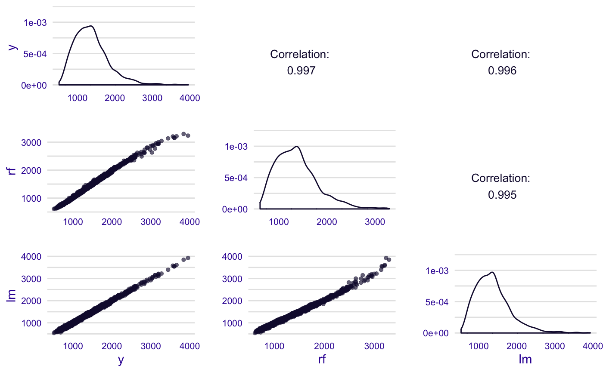

Model Residuals Audit
Alicja Gosiewska
2019-09-10
Source:vignettes/model_residuals_audit.Rmd
model_residuals_audit.RmdThis vignette demonstrates how to use the auditor package for auditing residuals of models. The auditor provides methods for model verification and validation by error analysis.
Many models, such as random forests and neutral networks are nowadays treated as black boxes. Therefore, there is a lack of theory that describes the behavior of errors in those models. Most methods provided in auditor package are model-agnostic, so can be used regardless of knowledge about errors.
Some of the graphical error analysis methods also have corresponding scores, which allow comparison of two models.
Regression use case - dragons data
To illustrate applications of auditor to regression problems we will use an artificial dataset dragons available in the DALEX package. Our goal is to predict the length of life of dragons.
## year_of_birth height weight scars colour year_of_discovery
## 1 -1291 59.40365 15.32391 7 red 1700
## 2 1589 46.21374 11.80819 5 red 1700
## 3 1528 49.17233 13.34482 6 red 1700
## 4 1645 48.29177 13.27427 5 green 1700
## 5 -8 49.99679 13.08757 1 red 1700
## 6 915 45.40876 11.48717 2 red 1700
## number_of_lost_teeth life_length
## 1 25 1368.4331
## 2 28 1377.0474
## 3 38 1603.9632
## 4 33 1434.4222
## 5 18 985.4905
## 6 20 969.5682Preparation for error analysis
The beginning of each analysis is creation of an explainer object with DALEX package. It’s an object that can be used to audit a model.
## Preparation of a new explainer is initiated
## -> model label : lm
## -> data : 2000 rows 8 cols
## -> target variable : 2000 values
## -> predict function : yhat.lm will be used ([33mdefault[39m)
## -> predicted values : numerical, min = 540.9447 , mean = 1370.986 , max = 3925.691
## -> residual function : difference between y and yhat ([33mdefault[39m)
## -> residuals : numerical, min = -108.2062 , mean = -3.701928e-12 , max = 113.8603
## [32mA new explainer has been created![39m## Preparation of a new explainer is initiated
## -> model label : rf
## -> data : 2000 rows 8 cols
## -> target variable : 2000 values
## -> predict function : yhat.randomForest will be used ([33mdefault[39m)
## -> predicted values : numerical, min = 610.9752 , mean = 1370.181 , max = 3292.296
## -> residual function : difference between y and yhat ([33mdefault[39m)
## -> residuals : numerical, min = -135.4756 , mean = 0.8047108 , max = 720.0888
## [32mA new explainer has been created![39mAudit of residuals
In this section we give short overview of a visual validation of model errors and show the propositions for the validation scores. Auditor helps to find answers for questions that may be crucial for further analyses.
Does the model fit data? Is it not missing the information?
Which model has better performance?
How similar models are?
In further sections we will overview auditor functions for analysis of model residuals. They are discussed in alphabetical order.
model_residual()
In this vignette we use first pipeline. However, alternative evaluations are showed as comments. First, we need to create a modelResiduals objects.
Plots
plot_acf() - Autocorrelation Function of Residuals
Autocorrelation Function plot can be used to check randomness of errors. If random, autocorrelations should be near zero for lag separations. If non-random, then autocorrelations will be significantly non-zero.
Residuals may be ordered by values of any model variable or by fitted values. If variable is not specified, function takes order from the data set.

plot_autocorrelation() - Autocorrelation of Residuals
On the Autocorrelation plot there are i-th vs i+1-th residuals. This plot may be useful for checking autocorrelation of residuals.
Sometimes it is difficult to compare two models basing only on visualizations. Therefore, we have proposed some scores, which may be useful for choosing a better model.

DW score and Runs score are based on Durbin-Watson and Runs test statistics.
Scores can be calculated with the scoreDW() and scoreRuns() functions or the score() function with argument score equals to “DW” or “Runs”.
## [1] 1.951918## [1] -1.881788plot_correlation - Correlation of Models
A grid of plots presents correlation of dependennt variable and fitted model values.

plot_pca() - Model PCA
Principal Component Analysis of models residuals. PCA can be used to assess the similarity of the models.

plot_predition() - Observed vs Predicted
Basic plot of residuals vs observed, fitted or variable values. If variable is not specified, function takes order from the data set.
Black line corresponds to the y=x function.

Predictions may be ordered by values any model variable or by fitted values. And both models may be plotted together.

plot_rec() - Regression Error Characteristic (REC) Curve
Error Characteristic curves are a generalization of ROC curves. On the x axis of the plot there is an error tolerance and on the y axis there is a percentage of observations predicted within the given tolerance. REC curve estimates the Cumulative Distribution Function (CDF) of the error. Area Over the REC Curve (REC) is a biased estimate of the expected error.

plot_residual() - Plot Residuals vs Observed, Fitted or Variable Values
Basic plot of residuals vs observed, fitted or variable values. It provides information about the structure of the model.

Residuals may be ordered by values any model variable or by fitted values. And both models may be plotted together. If variable is not specified, function takes order from the data set.

plotResidualBoxplot() - Boxplot of residuals
Comparison of the absolute valued of residuals. The red dot stands for the root mean square.

plot_residual_density() - Density of Residuals
Density of residuals may be plotted in different ways. Residuals of models may be simply compared.

Resuduals may be also divided by median of the numeric variable and splitted by a factor variable

plot_rroc() - Regression Receiver Operating Characteristic (RROC)
The basic idea of the ROC curves for regression is to show model asymmetry. The RROC is a plot where on the x-axis we depict total over-estimation and on the y-axis total under-estimation.
For RROC curves we use a shift, which is an equvalent to the threshold for ROC curves. For each observation we calculate new prediction: where s is the shift. Therefore, there are different error values for each shift:
Over-estimation is caluclates as: . Under-estimation is calculated as: . The shift equals 0 is represented by a dot.
The Area Over the RROC Curve (AOC) equals to the variance of the errors multiplied by .

plot_scalelocation() - Scale Location Plot
This plot shows if residuals are spread equally along the ranges of predictors.

For comparing 2 models we can use GQ score, which is based on Goldfeld-Quandt test statistic. And may be computed also in score() function with argument score equals “GQ”.